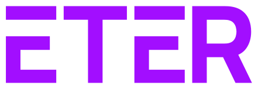
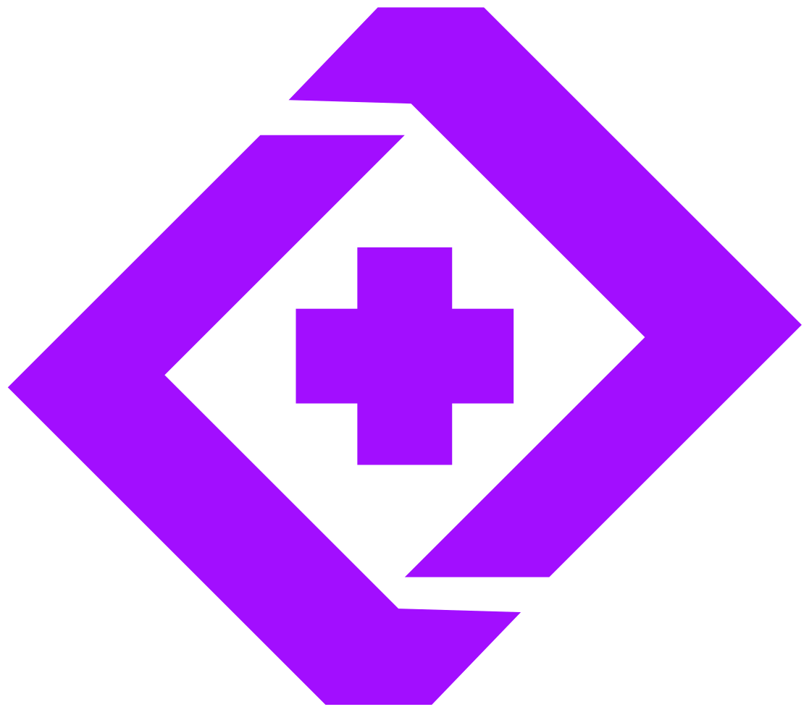

Logo principal
Isotipo + wordmark. Uso por defecto sobre fondos claros.eter-logo.svg
Isotipo + wordmark. Uso por defecto sobre fondos claros.eter-logo.svg
Knockout blanco para superficies oscuras o fotografía.eter-logo-white.svg

Solo tipografía, en púrpura de marca. Para lockups donde el isotipo ya aparece cerca.eter-wordmark.svg
eter-wordmark-white.svg

Marca aislada: favicon, avatar de app, sidebar colapsado, loaders.eter-isotype.svg
eter-isotype-white.svg
#a20eff
Wordmark #111827 / #000
Knockout #ffffff
El isotipo siempre en #a20eff o blanco.
Escalar siempre de forma proporcional.
El wordmark negro desaparece: usar la versión inversa.